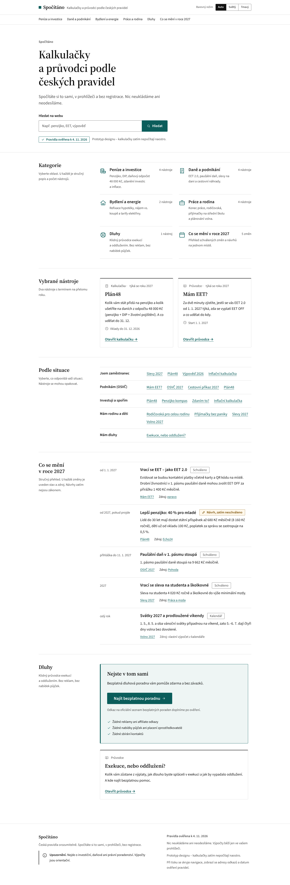
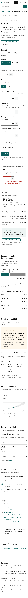

Varianta A: Klidná jistota
Web jako spolehlivá a dobře udělaná příručka. Velké písmo, úzký sloupec textu, nadpisy oddílů po straně a jediná akcentní barva. Každý výsledek má hned u sebe pravidlo, zdroj a štítek ověření. Uživatel má mít pocit, že je to přesné a nic mu to nevnucuje. Ilustrace nahrazují jen jednoduché linkové ikony.
Výhody
- Působí věrohodně a klidně, nic nevnucuje; ke každému výsledku je hned vidět pravidlo, zdroj a datum ověření.
- Nejlépe čitelná: velké písmo (18 px), úzký sloupec, nízká hustota a kontrast s rezervou v obou režimech.
- Nejsnáz se udržuje a rozšiřuje na dalších 11 nástrojů; dobře se tiskne a sekce Dluhy je klidná s výrazným odkazem na pomoc.
Nevýhody
- Nejméně výrazná a zapamatovatelná, při špatném provedení může působit až úředně.
- Na mobilu je stránka dlouhá a výsledek kalkulačky je až pod celým formulářem.
- Jedna barva a žádné ilustrace: kategorie a nástroje se na první pohled hůř rozlišují.


screenshots/.